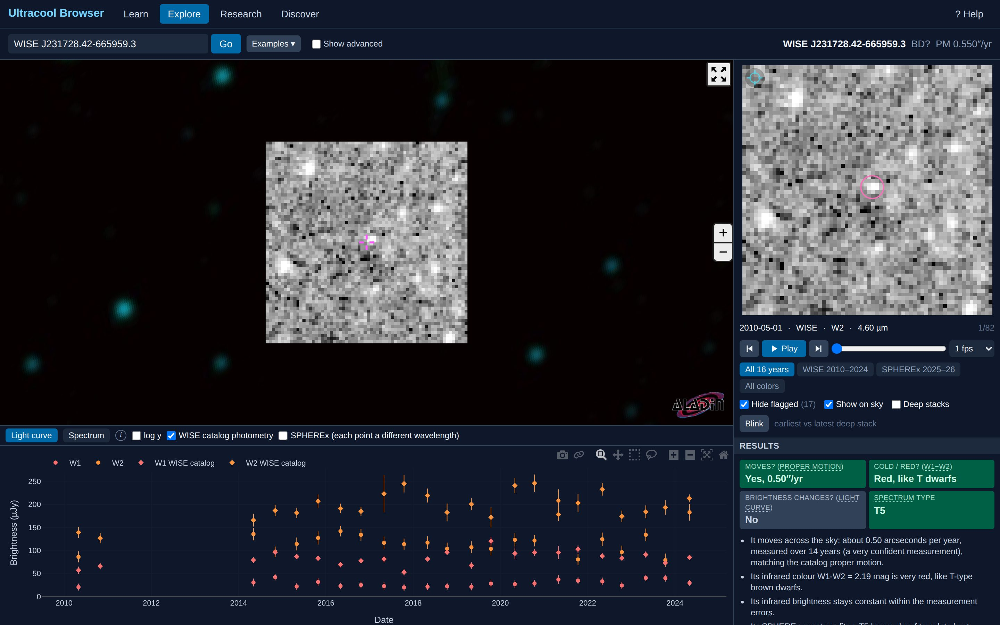
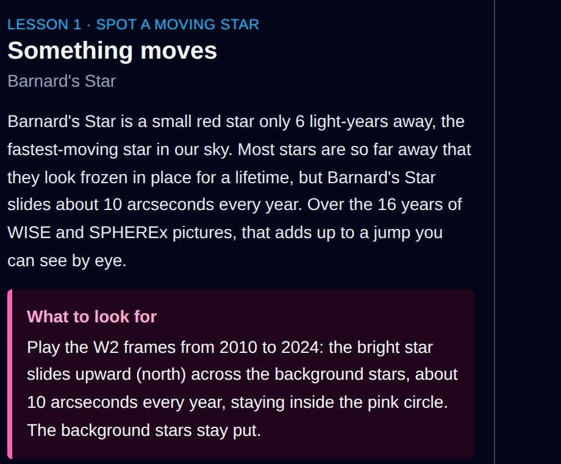
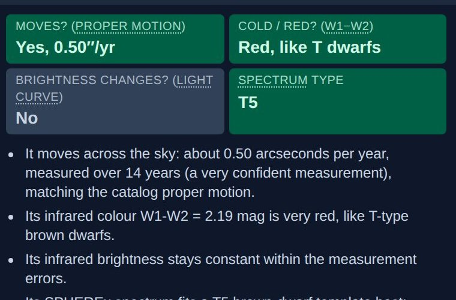
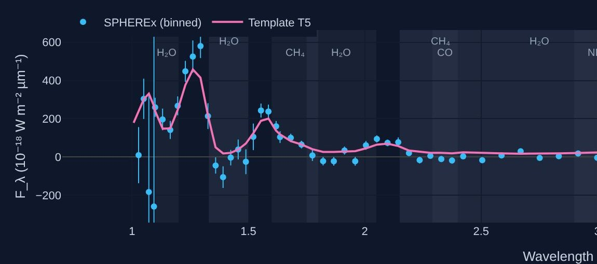
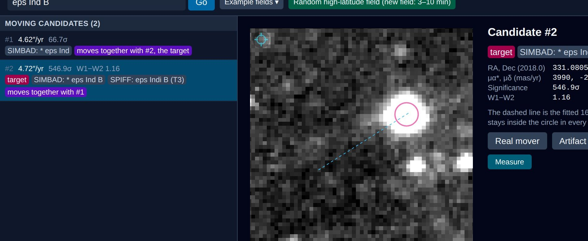
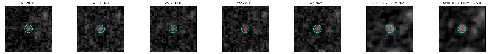
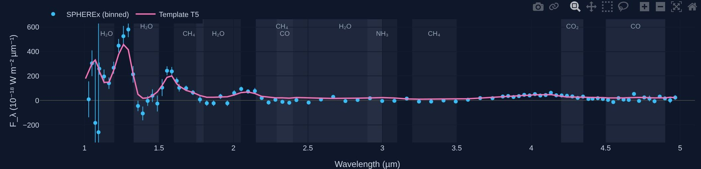

NASA has watched the infrared sky for 16 years. Nobody can easily watch it back.
2010
WISE
Whole sky at 3.4 and 4.6 µm
2014–2024
NEOWISE
The same sky every six months, for ten years
2025–2026
SPHEREx
A 102-colour spectrum of every point, 0.75–5 µm
Different cameras, grids, archives: a day of scripting→One click
What we built · live demo
1
Type any star, brown dwarf or coordinatesnames, designations, RA/Dec
2
Stream only the needed pixels from NASA's public cloud archiveWISE, NEOWISE, SPHEREx on one aligned grid
3
Measure it ourselvesmotion · colour · brightness changes
4
Type its SPHEREx spectrumagainst 47 brown-dwarf templates, with a type range
5
Drag the crosshair onto any other dotand measure that too

One tool, four audiences
From first lesson to real research

Students
Learn
7 short lessons on real objects, each with a quiz

Curious minds
Explore
Plain-English answers: does it move, is it cold, what is it?

Astronomers
Research
Error bars, catalogues, single exposures, CSV with provenance

Citizen scientists
Discover
Scan a field for everything that moves; vote real or artifact
A real result · first spectrum-based type
WISE J2317−6659 is a mid-T brown dwarf
≈T6 ± 1
from its SPHEREx spectrum, confirming a brightness estimate
~30 pc
≈100 light-years (25–40 pc)
0.5″/yr
motion from our own 2010–2026 images
not a companion
of the star pair HD 219509/219495


Detected on its predicted track in every epoch 2010–2025 (top) · SPHEREx 0.75–5 µm spectrum with the best template (bottom) · every claim re-checked by an independent adversarial review
Honest science
We tested it before trusting it
21/26
known brown dwarfs typed within two subtypes
validation on objects with published types · mean error 1.2 subtypes · types shown as ranges, not single labels
7/7
automated "new brown-dwarf candidates" were not new
diffraction spikes, a scattered-light streak, a young star in ice, a source in M33, one already known: why people need to see the images
Try it now
The next nearby neighbour could be found by a student.